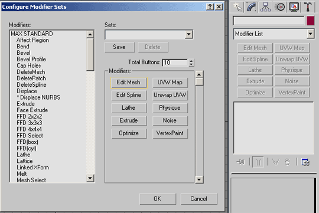

Beginner's Guide To The Edit Mesh Modifier
//note: in progress and don't worry, I'll brush up on my wiki markup 
Getting Started with 3D Studio Max Using the Edit Mesh Modifier
Introduction
This tutorial was made for 3D Studio Max 4.x although 95% of it can be applied to earlier versions (2.x and up).
With the advent of UT2003 and its use of static meshes in level design, it's become important for an amateur mapper to know a third party modelling package such as 3dStudio Max if they want to create unigue meshes rather than using the ones that came with the game. BSP is frowned upon now, and creating meshes in Unrealed and converting them to static meshes is "sub-optimal". Not to mention creating high poly stuff in the editor is only slightly better than a sharp stick in the eye.
OK, so you've got Max, you've made a box or something, now what? In Max, meshes are manipulated through the use of Modifiers. Let's go through the concept of a Modifier real quick.
Modifiers
Different Modifiers are used to modify a meshes shape, create an animation effect, add random noise to a mesh, map texture coordinates onto a mesh, modify those coordinates, and a multide of other things. Some basic ones are Bend, Twist, Taper, UVW Map (to create the texture coordinates for your meshes) and the most important and the one you will use the most, Edit Mesh. It's the main modifier used to manipulate your mesh on what's called a "Sub-Object" level. The sub-objects of your mesh include vertices (plural for vertex), edges, faces, polygons, and elements. More on these later...
First, let's set up your Modifier sets so that you can easily get to the ones you use most rather than having to select them from a list of the multitude of Modifiers available everytime you use it. Here's how to do it:
Configuring Your Modifier Set
- Select the Edit panel located near the top right of Max's interface. It' the curved blue symbol.
![[EMT_Fig1]](images/emt-fig1.gif) Figure 1 |
- Right click where it says Modifier List and select Show Buttons so it's checked. You should now see around 8 buttons beneath where it says Modifier List. This is set by default in Max 3.x and earlier versions so skip this step if you have an older version of Max.
![[EMT_Fig2]](images/emt-fig2.gif) Figure 2 |
- Right click the Modifier List again and select Configure Modifier Sets. A new window will pop up that lets you choose what Modifiers you want to have listed in your buttons area. On the list to the left, scroll down until you see Edit Mesh (keep looking, it's there) and drag and drop it on top of a button to the right in the same window. Any will do, even one that is already assigned a Modifier. You can drag other modifiers over that you may find useful, such as Extrude, Lathe, and Edit Spline which I won't go into in this tutorial. Notice that you can also specify the number of buttons displayed and that you can Save button configurations. Once finished, hit OK. Here's my set:

Figure 3 |
Ok, now let's make a box. Click on the Create tab in the top right corner of Max's interface that has the arrow symbol in it. It's just to the left of the Edit tab. Press the Box button and create your box out in the top view by left clicking the mouse and dragging out a square shape, then moving the mouse to define it's height. You probably already know this part but I'm just trying to cover all the bases so chill out! 
![[EMT_Fig4]](images/emt-fig4.gif) Figure 4 |
Now go back to the Edit tab while your box is selected and you should see something like this:
![[EMT_Fig5]](images/emt-fig5.gif) Figure 5 |
You can fine tune the box's dimensions by typing them in at the bottom and you can define how many segments it's split into along each axis. Give it a good 6 segments so we'll have plenty to work with. Now hit the Edit Mesh button that you configured earlier. You should see something like this:
Figure 6 |
Next Page: [The Edit Mesh Modifier]?
Category To Do – In progress?